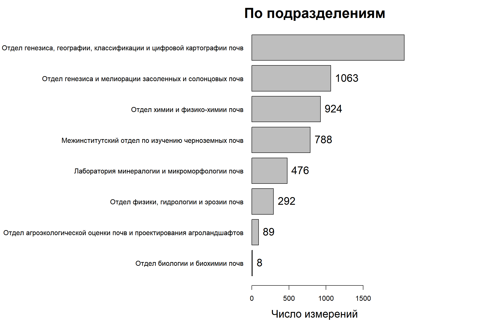

Онлайн обновляемый отчет по содержанию ИС
Васильева Н.А.
7.11.2019
Почвенная информация
Общая статистика
Всего измерений: 5696 Всего образцов: 1233 Всего разных почв: 24 Всего видов анализа: 72 Всего регионов исследования: 10Статистика по видам анализов
Число измерений
рН (водородный показатель) 600
М.д. карбонатов (по Козловскому):CO2 417
М.д. органического вещества (Гумус по Тюрину) 393
Калий по Масловой 275
Обменные катионы (по Шолленбергеру):Ca++ 266
Обменные катионы (по Шолленбергеру):Mg++ 266
рН солевой вытяжки 227
М.д. цинка в почве 218
Общий азот 212
М.д. кадмия в почве 210
М.д. меди в почве 210
М.д. свинца в почве 202
Обменные катионы (по Шолленбергеру):Na+ 192
Обменные катионы (по Шолленбергеру):K+ 148
Фосфор по Кирсанову в почве 148
Фосфор по Чирикову в почве 148
М.д. карбонатов (по Козловскому):CaCO3 135
М.д. содержания гипса 133
Железо по Тамму 110
Обменный натрий 103
Калий по Чирикову в почве 101
Фосфор по Мачигину в почве 80
Железо по Мера-Джексон 74
М.д. железа в почве 48
М.д. марганца в почве 43
Обменный (подвижный) алюминий в почве 42
Емкость катионного обмена 35
<0,001 мм, % 33
0,005-0,001 мм, % 33
0,01-0,005 мм, % 33
0,05-0,01 мм, % 33
0,25-0,05 мм, % 33
1,0-0,25 мм, % 33
Гигроскопическая вода, % 33
физическая глина < 0,01 мм, % 33
физический песок > 0,01 мм, % 33
М.д. натрия в почве 25
Обменная кислотность в почве 23
М.к. кальция в воде 18
М.к. магния в воде 18
М.к. натрия в воде 18
Удельная электрическая проводимость 17
Сухой остаток 16
М.д. никеля в почве 11
Бикарбонат-ион в почве 10
Карбонат ион в почве 10
М.д. иона сульфата в почве 10
М.д. иона хлорида в почве 10
М.д. калия в почве 10
М.д. кальция в почве 10
М.д. магния в почве 10
М.к. сульфатов в воде 10
Обменные катионы (по Пфефферу):Ca++ 10
Обменные катионы (по Пфефферу):K+ 10
Обменные катионы (по Пфефферу):Mg++ 10
Обменные катионы (по Пфефферу):Na+ 10
Щелочность общая в воде 10
М.к. гидрокарбонат-иона в воде 8
М.к. карбонат-иона в воде 8
М.к. аммонийного азота в воде 8
М.к. калия в воде 8
М.к. нитрат-ионов в воде 8
М.к. сульфат-ионов в воде 8
М.к. хлорид-ионов в воде 8
Перманганатная окисляемость 8
Гидролитическая кислотность 5
Сумма поглощенных оснований по Каппену 5
М.д. зольности 3
М.д. кобальта в почве 3
М.д. хрома в почве 3
М.д. плотного остатка водной вытяжки 2
М.к. хлоридов в воде 2Статистика по областям
Число измерений
Волгоградская область 1524
Тульская область 1350
Владимирская область 953
Воронежская область 564
Курская область 408
Сахалинская область 346
Московская область 276
Республика Дагестан 206
Москва 55
Тамбовская область 14 Число видов анализа
Республика Дагестан 26
Тульская область 25
Воронежская область 23
Волгоградская область 19
Московская область 18
Курская область 14
Москва 11
Владимирская область 8
Сахалинская область 8
Тамбовская область 7 Число образцов
Волгоградская область 541
Владимирская область 244
Курская область 140
Тульская область 133
Воронежская область 68
Сахалинская область 45
Московская область 33
Москва 17
Республика Дагестан 10
Тамбовская область 2Статистика по почвам

Число измерений
Дерново-подзолистые преимущественно мелко- и неглубокоподзолистые 1112
Серые лесные 1003
Каштановые солонцеватые и солончаковатые и солонцы (автоморфные) 601
Солонцы (автоморфные) 462
Черноземы типичные 408
Агрочернозем миграционно-мицеляный 396
Вулканические слоисто-пепловые 278
Черноземы выщелоченные 221
Лугово-каштановые солонцеватые и солончаковатые 206
Солонцы (автоморфные) и бурые солонцеватые 201
Солонцы (автоморфные) и светло-каштановые солонцеватые и солончаковатые 201
Лугово-черноземные 182
Дерново-подзолистые 159
Черноземы оподзоленные 119
перегнойно-грубогумусовые вулканические 49
Солонцы луговатые (полугидроморфные), светло-каштановые солонцеватые и солончаковатые и лугово-каштановые 36
грубогумусовые вулканические 19
Дерново-подзолистые преимущественно неглубокоподзолистые 11
Вода 7
Светло-каштановые солонцеватые и солончаковатые, солонцы луговатые (полугидроморфные) и лугово-каштановые 7
тёмносерая лесная 7
Светло-каштановые 5
Солончак 4
фон 2 Число видов измерений
Лугово-каштановые солонцеватые и солончаковатые 26
Дерново-подзолистые преимущественно мелко- и неглубокоподзолистые 25
Черноземы оподзоленные 19
Лугово-черноземные 18
Дерново-подзолистые 15
Черноземы типичные 14
Серые лесные 12
Солонцы (автоморфные) и бурые солонцеватые 12
Солонцы (автоморфные) и светло-каштановые солонцеватые и солончаковатые 12
Черноземы выщелоченные 12
Дерново-подзолистые преимущественно неглубокоподзолистые 11
Агрочернозем миграционно-мицеляный 9
Вулканические слоисто-пепловые 8
Каштановые солонцеватые и солончаковатые и солонцы (автоморфные) 8
перегнойно-грубогумусовые вулканические 8
грубогумусовые вулканические 7
тёмносерая лесная 7
Солонцы (автоморфные) 6
Вода 3
Светло-каштановые 3
Светло-каштановые солонцеватые и солончаковатые, солонцы луговатые (полугидроморфные) и лугово-каштановые 3
Солонцы луговатые (полугидроморфные), светло-каштановые солонцеватые и солончаковатые и лугово-каштановые 3
фон 2
Солончак 1 Число образцов
Каштановые солонцеватые и солончаковатые и солонцы (автоморфные) 274
Дерново-подзолистые преимущественно мелко- и неглубокоподзолистые 273
Солонцы (автоморфные) 168
Черноземы типичные 140
Серые лесные 99
Агрочернозем миграционно-мицеляный 44
Солонцы (автоморфные) и бурые солонцеватые 37
Вулканические слоисто-пепловые 35
Лугово-черноземные 26
Солонцы луговатые (полугидроморфные), светло-каштановые солонцеватые и солончаковатые и лугово-каштановые 25
Черноземы выщелоченные 22
Солонцы (автоморфные) и светло-каштановые солонцеватые и солончаковатые 19
Дерново-подзолистые 18
Черноземы оподзоленные 11
Лугово-каштановые солонцеватые и солончаковатые 10
перегнойно-грубогумусовые вулканические 7
Вода 5
Светло-каштановые солонцеватые и солончаковатые, солонцы луговатые (полугидроморфные) и лугово-каштановые 5
Светло-каштановые 4
Солончак 4
грубогумусовые вулканические 3
Дерново-подзолистые преимущественно неглубокоподзолистые 2
тёмносерая лесная 1
фон 1Гистограмма глубин отбора
Гистограммы результатов (распределения величин)
Статистика по отделам 2018-2019
